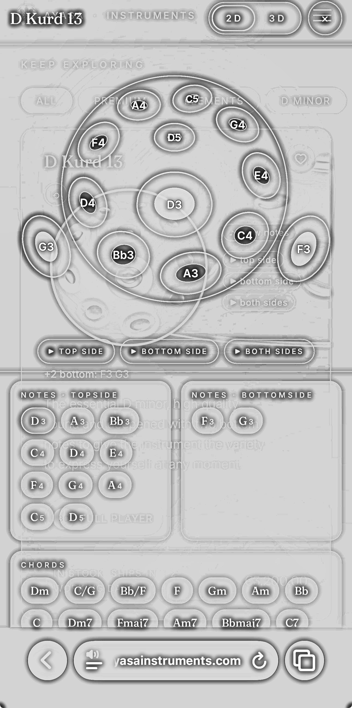
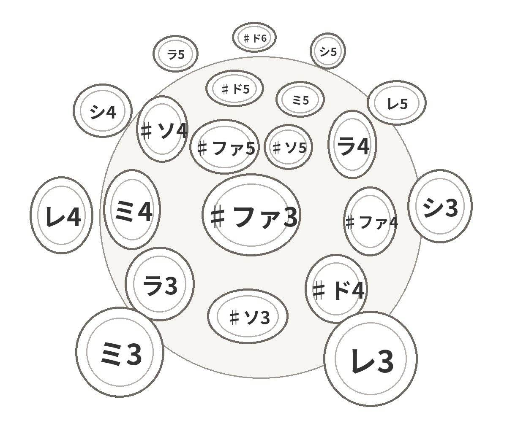
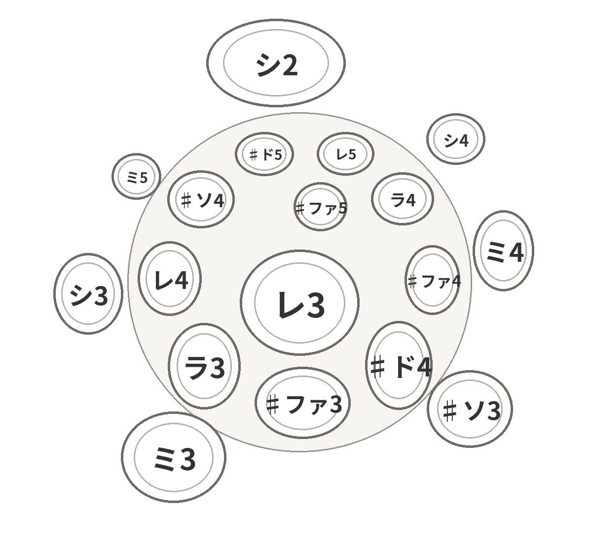

金沢を拠点に活動するハンドパン奏者 handpan_kk のホームページです。演奏動画、スケール（音階）の解説、初めての一台の選び方と、愛用の機材をまとめています。
Sharing the quiet resonance of the handpan, from Kanazawa, Japan.

こんにちは、handpan_kk です。金沢を拠点にハンドパンを演奏し、Instagramで演奏動画を公開しています。愛器は Yishama F3 Pygmy 19（19音）。ロビーコンサートのような、明るく静かな場所での小さな演奏会が理想です。
Handpan player based in Kanazawa, Japan. My instrument is a Yishama F3 Pygmy 19. Performances and videos are on Instagram and YouTube.
世界のメーカーで人気のスケールを、音の構成（カタカナは固定ド表記）とともに紹介します。


演奏・撮影に使っている機材と、愛読書などの関連アイテムです。
全巻愛読している漫画です。「ほのぼのとした絵柄とは裏腹に、現代の弱点を鋭く突いた世界観に引き込まれる漫画です」——店主のひとことです。作者の坂月さかな先生にお会いしたこともあります。
※価格はAmazon.co.jpでご確認ください
Amazonで見る（PR）楽器本体のおすすめは「おすすめハンドパン」の記事にまとめています。
演奏の合間に楽しみたい配信と、贈りものや自分へのご褒美に選びたいお取り寄せを集めた、小さなコーナーです。